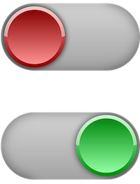
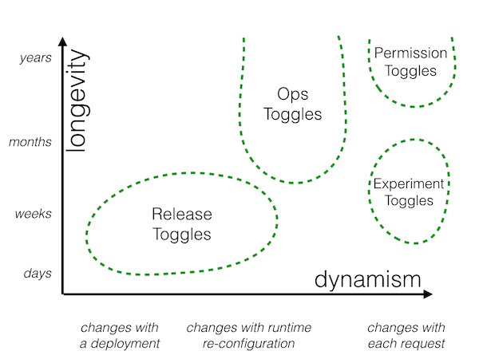

CONTINUOUS INTEGRATION
CONTINUOUS DELIVERY
CONTINUOUS DEPLOYMENT
But first things first, let's define these terms:
CIAO!
Antonello D'Ippolito
Software engineer, Scrum master
@antodippo
VONQ is a company that helps other companies to find the right talent for their job vacancies.
We have a platform that integrates different services for job marketing, guiding the recruiter with
recommendations for channels on which advertise it. They are
mainly written in PHP and Javascript, but also Python and Scala for the machine learning part.
I'll tell you how we are trying to build continuous stuff.
FAST AND TINY PRs
CODE REVIEWS
PAIR PROGRAMMING
FEATURE TOGGLES

Feature toggles (often called also feature flags) are the technique for adding a functionality in such
a way that it can be turned on or off, and it allows developers and product managers to:
if ($toggleManager->isActive('new_fancy_functionality')) {
$this->newFancyFunctionality();
} else {
$this->oldFunctionality();
}

https://www.martinfowler.com/articles/feature-toggles.html
- release toggles, which allow incomplete features to be integrated into the master branch, and turned on
only when completed or when product management decides to: "separating release from deployment". They
should have a short life and be changed in a more static way, at the deployment stage
DECOUPLE TOGGLE FROM DECISION
CENTRALIZE THE LOGIC
AVOID CONDITIONALS
REMOVE TOGGLES
ACTIVE
INACTIVE
CONDITIONALLY ACTIVE
“IF IT HURTS,
MONITOR EVERYTHING
ERROR LOGS
CRONS EXIT STATUS
EXTERNAL SERVICES CALLS RESPONSE TIME
CONTROLLERS LOADING TIME
DECOUPLE DEPLOY
A/B TESTING
CANARY RELEASES
Yeah, ok, but...
IT SHARPENS YOUR DEVOPS SKILLS
FAST FEEDBACK
FROM CI
FROM MONITORING
FROM USERS
YOU'RE GONNA FAIL.HOW SOON
“That’s why, even if you can’t actually release every set of changes that passes all your tests,
you should aim to create a process that would let you do so if you choose to.”
Continuous Delivery - Jez Humble, David Farley
- automating your entire build, deploy, test, and release process.
“El camino es la recompensa”
Oscar W. Tabarez